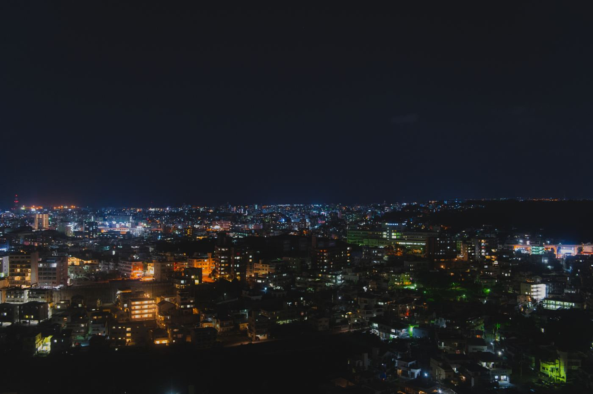
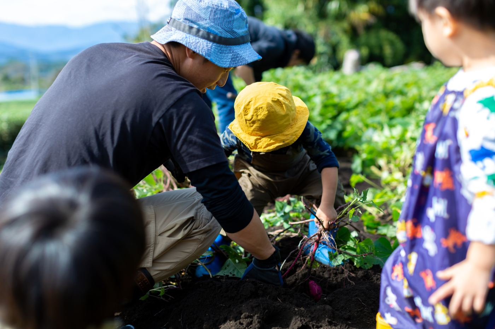
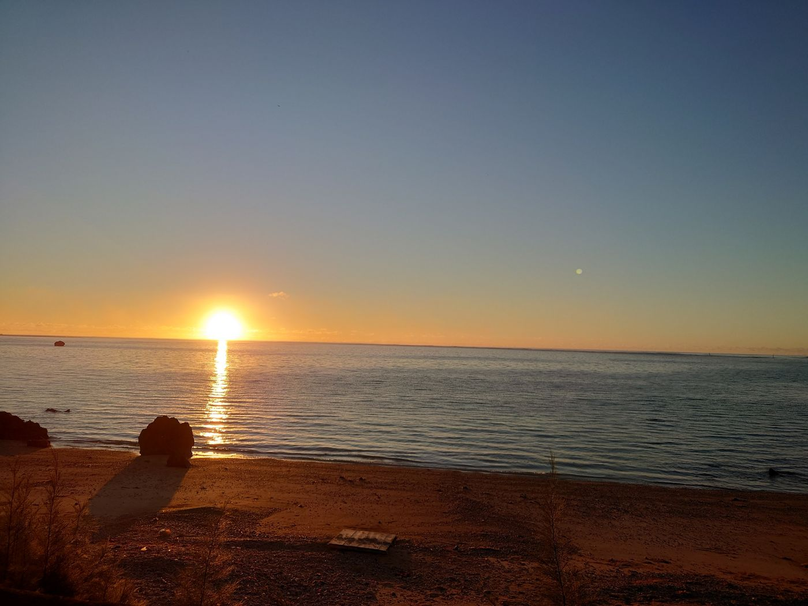
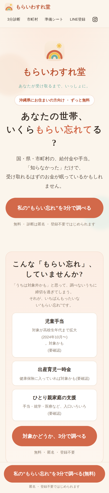

これは、あなたにも関係のある物語。
146万人が、
住んでいるのが沖縄です。
— あの灯りのひとつひとつに、暮らしがある —
出会いを大事にし、
伝統を紡ぐのが沖縄です。
いちゃりばちょーでー
一度会えば、みな兄弟。

困ったときは、
助け合うのが沖縄です。
ゆいまーる —— 結いの心。

なにより、
美しいのが沖縄です。
そんな沖縄に、いま。
まだ眠っている
“ささえ”があります。
国や県、市町村の給付金や手当が——
「知らなかった」というだけで、
届かないまま終わることがある。
一人が受け取るたび、
沖縄のみらいは、
すこし明るくなる。
確認できた制度だけを、
掲載しています

3分の診断で、あなたの世帯の
“もらい忘れ”が見つかるかもしれません
無料 ・ 匿名 ・ 登録不要
沖縄県にお住まいの方向けのサイトです
とどけ、沖縄のみらいへ。
もらいわすれ堂
あなたが受け取るまで、いっしょに。